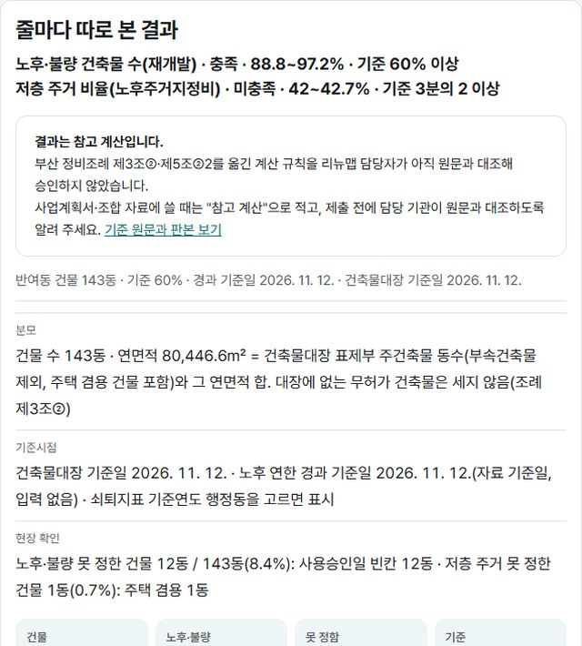

구역 계산
노후주거지정비·재개발 구역 신청요건 계산
부산 구역의 지번을 넣거나 지도에 구역을 그리면, 노후주거지정비 신청요건(저층 주거 3분의 2, 20년 넘은 건물 비율)과 재개발 노후·불량 비율을 조문과 함께 계산합니다.
결과는 1쪽 한글 문서, CSV, 구역 경계 SHP로 받습니다. 지번과 구역은 이 기기 안에서만 계산합니다.

반여동 지번 60개로 실제 계산한 견본입니다. 그림을 누르면 크게 봅니다.
줄마다 따로 본 결과
결과는 참고 계산입니다.
부산 정비조례 제3조②·제5조②2를 옮긴 계산 규칙을 리뉴맵 담당자가 아직 원문과 대조해 승인하지 않았습니다.
사업계획서·조합 자료에 쓸 때는 "참고 계산"으로 적고, 제출 전에 담당 기관이 원문과 대조하도록 알려 주세요. 기준 원문과 판본 보기
행정동 쇠퇴 3요건 값
①·②는 지번 목록으로 구하지 못하는 행정동 값입니다.
신청 구역이 속한 행정동을 고르면 값·출처·기준일을 보여 줍니다.
주택정비형 재개발 입안요건
조례 제5조②2는 주택정비형 재개발에만 적용됩니다.
도시정비형 재개발은 이 기준의 대상이 아닙니다.
종합 판정이 아닙니다.
'현장 확인'은 자료로 정하지 못한 요건입니다.
주민 동의와 재건축진단은 다루지 않습니다.
건축물대장에 없는 무허가 건축물은 세지 않습니다(조례상 노후·불량에 포함). 현장 기록으로 확인하기
현황조사 항목별 확인한 내용과 미확인 항목, 이 기기의 현장 기록을 함께 담습니다.
한글 파일이 열리지 않으면 같은 내용을 CSV로 받으세요.
QGIS에서는 CSV를 첫 줄(안내 문구) 하나 건너뛰고 열어, 연속지적도의 PNU 칸과 결합하면 지도에 붙습니다.
리뉴맵은 필지 도형을 담지 않아 GeoJSON은 만들지 않습니다.
수기 대조 표본은 같은 목록이면 늘 같은 건물이 뽑힙니다.
건축물대장 열람 값과 맞춰 보고 결과를 문서에 적으세요.
오래된 창고·공장 목록도 같은 건물 자료로 볼 수 있습니다.
행정동 값으로 쇠퇴 요건이 안 맞으면 집계구(통계청 최소 통계 구역) 단위 쇠퇴 요건으로 따로 볼 수 있습니다.
경계안 비교
경계안은 3개까지 이 기기에만 저장합니다.
같은 기준으로 다시 세어 나란히 보여 줍니다.